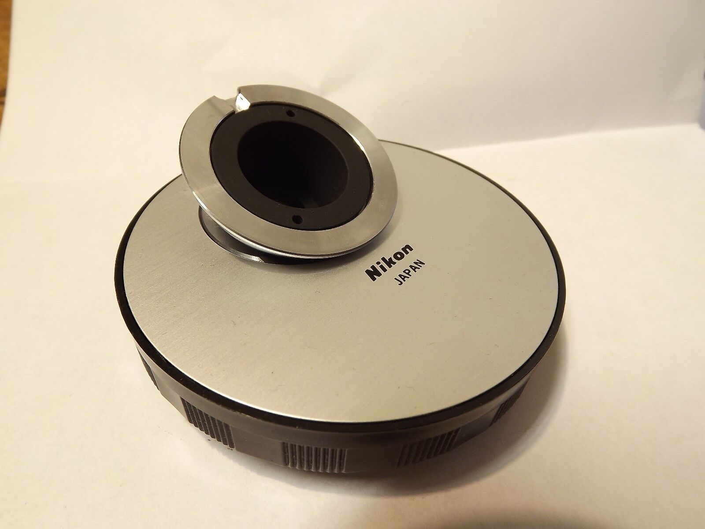
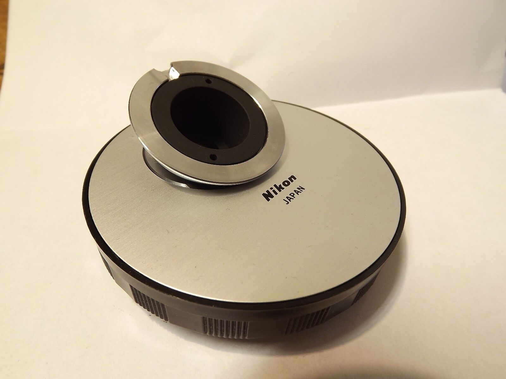

back

Nikon Optiphot Microscope
The Optiphot was introduced around 1978, inheriting some features from 1976 Metaphot and Biophot,
with the same CF optics but more options and some cost reductions, including lower illumination power.
Instruction manual
Optiphot Pol Brochure
Optiphot Pol manual
Repair Manual
Optiphot @ lavinia.as.arizona.edu
Nikon Labophot Microscope #120432 *Power Tested*
eBay item number: 294867880389
Condition: Used
Manufacturer: Nikon
Model: 120432
Includes: 1 Labophot microscope
Condition: Nikon Labophot Microscope #120432 *Power Tested*.
Clean, good condition. Used.
This item was previously owned and was working with other working equipment.
See photos for exact item, condition, and details on model available.

Received 9 June 2022
Despite being advertised as a Labophot,
it is an Optiphot, as embossed on its "Nikon Optiphot" arm plate.
Plastic base pads are fine.
Those tend to be problematic on Optiphot 2...
The lamphouse was thankfully intact, having been removed as requested.
Bulb lights; filament shows clearly in the field lens; diffuser is missing...
A cheap substitute was ordered from Amazon.

Condenser carrier and rack are intact and working,
but neither coarse nor fine stage focus knobs work.
Bizarrly, power connecton for 12V bulb uses 110VAC plug and receptacle:

...although they match those on page 10 of
the Optiphot instruction manual.
Condenser carrier and rack are seemingly identical to those on the diaphot Optiphot 66;
unlike the 66, its stop actually prevents running off its pinion.
That carrier design seems odd; an upper U is rigid to the rack,
with a screw that anchors condensers to it,
but a lower spring-loaded ring
with two adjusting screws that center condensers.

Condenser and substage assemblies mount on a dovetail that
is removable from the (broken) stage focus rack.

Focus
Optiphot-1 (and Labophot) fine focus differs from -66:
-66 has a single 26:6 planetary gear driven from its (fragile plastic) fine focus gear (13:3),
-1 15:6 plastic planetary is driven from fine focus, driving via a plastic idler its 20:6 (25:3).

-1 fine focus on the left; -66 fine focus is to the right, with its fine focus shaft
Those last (metal) gears' 6 cog sticks thru a large brass spacer/bushing plate
to drive a first coarse focus coaxial sun gear,
which smaller cog drives the coarse focus planetary gear,
which small cog drive the coaxial focus pinion sun gear.
The -1 focus had been already fiddled;
its first coarse focus sun gear was missing, and
its large brass planetary gearcase was only loosely threaded onto its coarse focus tube.
After tightening, Optiphot coarse focus knobs have about 1mm end play,
but rack grease viscosity suffices to resist stage drift.
The -66 coarse focus tube has an improvised retaining nut on the end without gears;
its brass planetary gearcase is still tightly threaded to its coarse focus tube.
Both focus blocks are the same width, so presumably matching fine focus shaft lengths.
See Labophot Fine Focus for gear repair details.
Condenser
Bought a Zeiss 0.9 flip-top condenser; got
some advice.
Bought a Nikon swing-out condenser; not enough working distance for 3mm epi plate over the stage.
ELWD condenser arguably has too much working distance.
Nosepiece turret
abednego1995
explained difference from infinite semiconductor inspection Optiphot 100 series turret;
eBay item: 173262463509
Condition: Used
 

A Nikon 5 space microscope turret that fits Microphot, Labophot and Optiphot for sure.
It may fit other models.
The turret is in excellent condition.